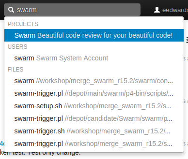
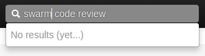
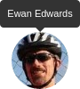
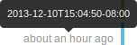
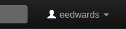
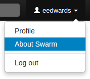
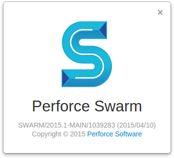
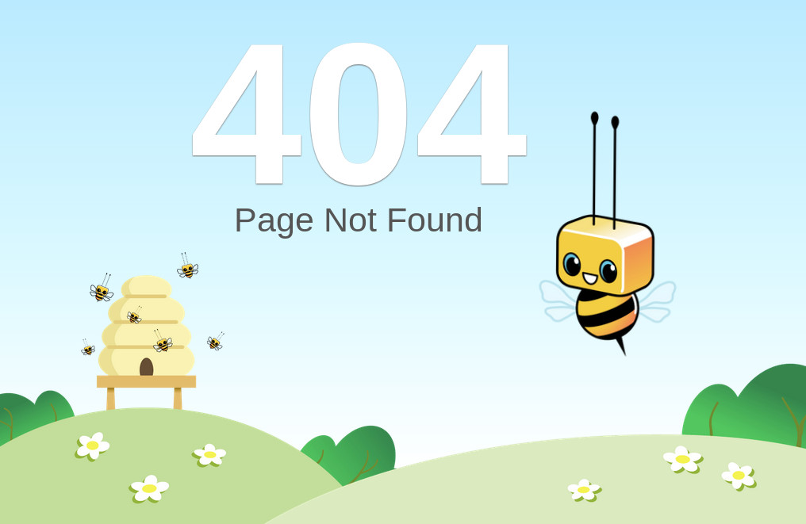
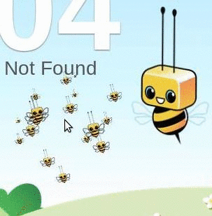
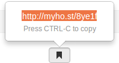

Notable minor features
Quick URLs
Many developers like to type the least amount of information to locate the data they're looking for. Swarm tries to assist by handling URLs intelligently. If you visit a URL like:
https://myswarm.url/identifier
Swarm attempts to locate identifier as a
review,
changelist,
depot path,
project,
job,
user,
group, depot name, and Git Fusion
SHA1 (or fragment). If you visit the URL
https://, Swarm
redirects to
myswarm.url/123https://,
provided that changelist myswarm.url/changes/123123 exists. If you visit the
URL https://, Swarm
tries each of the following URLs and redirects to the first match:
myswarm.url/bob
https://myswarm.url/changes/bobhttps://myswarm.url/files/bobhttps://myswarm.url/projects/bobhttps://myswarm.url/jobs/bobhttps://myswarm.url/users/bobhttps://myswarm.url/groups/bob
If you enter an identifier that does not exist for any type of resource,
Swarm displays a Page Not Found error.
Note
Note that changelist identifiers must be numeric, so there could never
be a changelist called bob.
Note
Git Fusion SHA1 identifiers (or a fragment of one) work when the SHA1 refers to a single changelist. If the SHA1 refers to more than one changelist, which can occur for Git branches, Swarm reports a 404 error.
@mentions
Whenever you write a changelist description, job description, comment, or
review, use an @mention to refer to projects,
changelists, jobs, and users. Swarm automatically creates a link for each
@mention, so it's easy to navigate to the specified resource. For example,
when you include @job12345 in a comment, Swarm turns
that text into a link that, when clicked, displays the
Jobs page for job12345.
Note
For jobs, the @ character is optional: Swarm creates
job links for any text that looks like a job identifier, such as
job012345.
Similarly, Swarm creates change links for change
1234, or review links for review 2345.
When you start a code review, any users included as @mentions in the
changelist description automatically become reviewers for that code
review. During a code review, including a user @mention in a
comment also causes the mentioned
user to receive notifications
of code review events, even if they are not a member of your project or
following you or your project. Including an asterisk
(*) before the userid in an @mention, for example
@*, that user becomes
a required reviewer. See
Required reviewers for details.
userid
Search
 Swarm can search for users, projects, and file paths. Enter keywords or path elements into the search field, which appears at the right of the Swarm toolbar, to display any matching results.
Navigate the results with the ↑ (up arrow) or ↓ (down arrow) keys, and display the details for the result by pressing Enter. Or, click a search result with your mouse.
Full-content searching is only available if your Swarm administrator installs the Helix Search Tool. See Search for details.
 Swarm updates the search results as you type. Some results should appear within a second or two. You may have to wait a few seconds for final results to be incorporated into the results list. When Swarm does not yet have any results, it indicates such.
JIRA integration
Swarm ships with a JIRA module that can:
-
create links to JIRA when Swarm displays JIRA issue identifiers in changelists, comments, jobs, reviews, etc.
-
add links within JIRA back to Swarm, for JIRA issues associated with reviews or committed changes. These links reflect the current status of associated code reviews.
By default, the JIRA module is disabled. To enable JIRA integration, see Enabling the JIRA module.
Avatars
Each event in an activity stream includes an avatar, an image that represents the user responsible for the event. Avatars help to visually tie together various events and personalize the history presented in the stream.
Based on the email address entered in a user's Perforce account, Swarm attempts to fetch an avatar from gravatar.com. Otherwise, Swarm selects from its collection of default avatars and color palettes to provide pleasing variations.
 Hover your mouse over an avatar to display a tooltip with the user's full name.
Following
Whenever you see a button, for example when you are viewing a project page or user profile, clicking the button causes Swarm to send you notifications whenever there is activity generated by the current resource.
This is useful if, in the case of a project, you are not a project member but want to know what's happening in the project. Or, in the case of a user, you want to see what activity that user generates.
To stop receiving notifications, visit the project page or user profile and click the button.
Time
 Swarm typically displays the time of an event, such as when a file was created, as about X units ago. Hover your mouse pointer over a time display to see a tooltip displaying the exact date and time of the event.
Keyboard shortcuts
Swarm provides the following keyboard shortcuts:
About Swarm
You can discover the version of Swarm you are using:
-
Log in to Swarm.
-
 Click your userid, found at the right of the main toolbar.
-
  Select . A dialog appears displaying Swarm's version:
Custom error pages
  If Swarm encounters an error during processing, such as when a Quick URL is used that points to a non-existent resource, Swarm presents a custom error page featuring its mascot, Bizzy Heisenbug. Bizzy's friends swarm your mouse pointer while you are moving it.
Short links
Swarm provides a short link feature that creates shorter URLs than normal to make sharing specific views within Swarm easier. It is also possible to register or configure an alternate, shorter hostname to have even shorter URLs. See Short links for details.
Conceptually, this is identical to http://tinyurl.com/, or Twitter's http://t.co/, but is restricted to Swarm URLs on a hostname you control.
Swarm displays a bookmark button when viewing files or folders in the depot.

Click the button to display a popup containing the short link. Press CTRL+C (on Windows and Linux), or Command+C (on Mac OSX), to copy the short link. You can then paste the short link anywhere you'd like to share the current file or folder view in Swarm.
Mobile browser compatibility
Swarm is intended to be used from any modern browser, including most mobile device browsers. For our initial release, mobile browser testing has been quite limited. We anticipate that you may encounter various issues, but we certainly look forward to hearing about your mobile device experiences using Swarm.